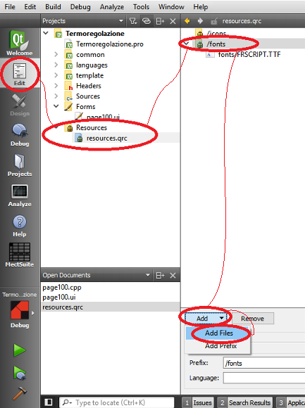

Die folgenden Schriften werden während der Installation des MectSuite-Pakets installiert:
DejaVu Sans
DejaVu Serif
Bei der Entwicklung Ihrer Anwendungen wird dringend empfohlen, eine dieser Schriften zu verwenden, da jede andere im QtCreator verwendete Schriftart nicht korrekt angezeigt wird, wenn Sie die Anwendung in das Panel übertragen.
Wenn Sie eine bestimmte Schriftart auf dem Ziel hinzufügen möchten, müssen Sie sie in das Projekt einbinden, wie im Kapitel “Bilder / Schriften hinzufügen” beschrieben.

WARNUNG: Es ist möglich, nur Schriften mit der Erweiterung .ttf einzufügen.